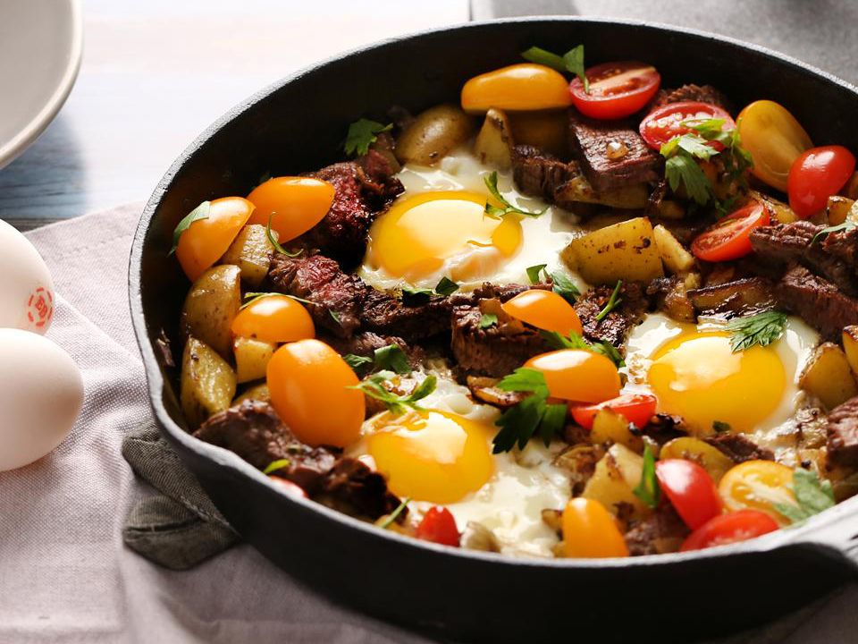

Steak & Egg Hash

Description: A pan of steak and egg hash
This easy steak and eggs recipe combines pan-fried potatoes and onions with cherry tomato halves, sliced steak, and perfectly cooked eggs fora delicious breakfast or dinner!
Ingredients
- 1 beef sirloin steak, sliced
- 1 pound potatoes, cut into small pieces
- salt and ground black pepper to taste
- 1 sweet onion, chopped
- 4 large eggs
- 1 cup cherry tomatoes, halved
- italian seasoning